CSF Documentation¶
Getting Started¶
Head Start for Administrators¶
1. Create User Groups with a Specific Roles Set¶
Step 1: Log in CMS Application
Step 2: Access System > User Group on the Menubar
Step 3: Click Add Group
Step 4: In the Create New User Group window:
- Type in: Group Name, Description
- Tick Is Group Sales if the Group is Sales
- Select All Module
- Tick the boxes to apply roles to the Group
Step 5: Click Save
2. Create Users¶
Step 1: Log in CMS Application
Step 2: Access System > User Info on the Menubar
Step 3: Click Add User
Step 4: In the Create New User window:
- Type in: Username, Password, Confirm Password, Full name, Email, Phone Number
- Select Date Hire, Status Active
- Select Center (depend on which Center the User works in from HR Announcement)
- Select User Group (depend on User Functional Group in the Organization)
Step 5: Click Save
3. Edit User Profile¶
Step 1: Log in CMS Application
Step 2: Access System > User Info on the Menubar
Step 3: Click Edit icon on the User you want to edit
Step 4: Update fields you want to edit and click Save
4. Set User Roles¶
Step 1: Log in CMS Application
Step 2: Access System > User Info on the Menubar
Step 3: Click Edit icon on the User you want to update roles
Step 4: Click Update from Group
Tip
It is best to always apply roles in a group for all users of the group by using Update from Group function or Update for All Users function.
In case there are some users required to work with different roles to the rest in the group, just tick the roles boxes and click Save.
5. Deactivate Users¶
Step 1: Log in CMS Application
Step 2: Access System > User Info on the Menubar
Step 3: Click Edit icon on the User you want to deactivate
Step 4: Select Status Inactive
Step 5: Click Save
Head Start for End Users¶
- Customer Life Cycle

See also
Note
According to Customer Lift Cycle and specialized functionality of each Functional Group, each Module is designed and made usable for each Group.
Current Groups:
- Marketing Department: manage and take action on LEAD in Marketing Module
- Telemarketing Department: manage and take action on COUPON and APPOINTMENT [Not Come] in Telermarketing Module
- Admission Department: manage and take action on COUPON and APPOINTMENT [Not Come] in Telemarketing Module AND VISIT and CONTRACT in Admission Module
- Academic Department: manage and take action on CLASS in Classes Module AND Teachers in Teachers Module
Managers¶
CSF Portal¶
Introduction¶
CSF Portal is a specially designed gateway that help users quickly access CSF Application, CMS Application, Live Report System, User Guide, etc. to perform daily tasks and operation in the organization.
- CSF Portal Domain: http://csf-beta.citysmart.vn/
- CSF Application Domain (Sale): http://csf.citysmart.vn/
- CSF Application Domain (Academic): http://csf-beta.citysmart.vn/
- CMS Application Domain: http://cms.citysmart.vn/screen/Login.aspx
Login¶
What you see:

What you do:
Step 1:

input your user ID (example: admin_csv)
Step 2:

input your password (may include text, number, special characters, example: admin@123456)
Step 3:

Select this option to login if you are an officer
Note
if your account is a teacher account, you cannot login by selecting this option
OR
Select this option to login if you are a teacher
Note
if your account is an officer account, you cannot login by selecting this option.
Homepage¶
What you see:
What you do:
Select the block in correspondence with the application of your need, including:
- CSF Block: Select this block if you want to access CSF Application
- CMS Block: Select this block if you want to access CMS Application
- Live Report Block: Select this block
 if you want to access Live Report
if you want to access Live Report
- User Guide Block: Select this block
 if you want to access User Guide
if you want to access User Guide
CSF Application¶
About CSF¶
CSF – CITYSMART FIRST is a computing service application internally designed by CITYSMART VIETNAM to help you manage your customer relationships, manage school system, and integrate with other systems, including
- Marketing: help you manage leads
- Telemarketing: help you market and connect with customers
- Admission: help you sell, service, and analyse your customers
- Students: help you manage your students
- Classes: help you manage your classes
- Teachers: help you manage your teachers
- eInvoice: help you manage eInvoice
- Reports: help you with daily operation with detailed reports
- System: help you configure system to meet business needs
Basics¶
Menu Bar
Depend on your roles and responsibilities in your organization, you will see the menu bar, functions, and contents differently, for example:
- if your role is to perform tasks related to Marketing Functions, you will see:
- if your role is to perform tasks related to Telemarketing Functions, you will see:

- if your role is to perform tasks related Admission Functions, your will see:
and so on …
General Search
Where to find:

When you search by:
- Name: Student Name (at least 4 Characters)
- Phone: Contact Phone Number (at least 4 Characters)
for example: type in general search box “Hoàng Phương Anh”
you will see
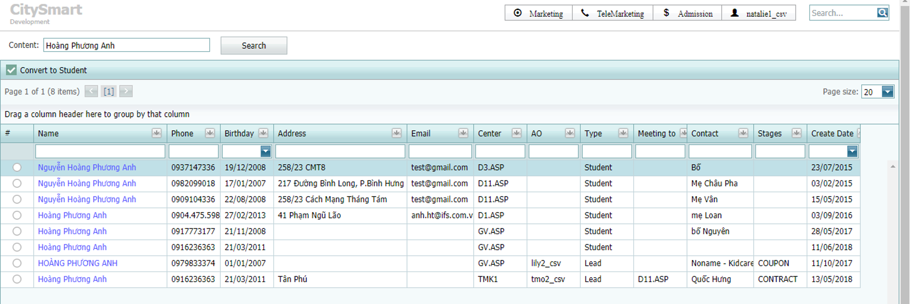Note
If the result is blank, try searching by Phone or another Name (with/without accents). If the result is still blank, the information does not exist in the system. You can Create New Lead.
If the result return two types Lead and Student, click on the Name of Student to continue your work:

Grid Search
When you access any Module, on the Function Bar
you will see Grid Search 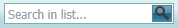
Tip
You can type in values you want to search after or before you filter Source, Time, and click Search  . The grid will show the results that match your filters and search values.
. The grid will show the results that match your filters and search values.
Grid View
Grid Manipulation
Marketing¶
1. Create a Marketing Campaign¶
Step 1: Access Marketing > Campaign List on Menubar
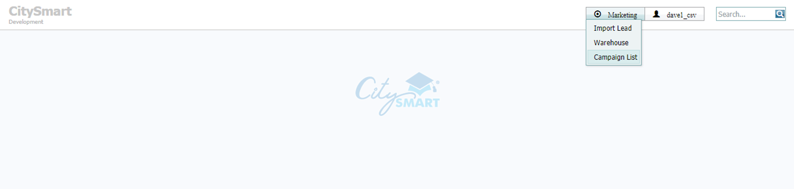Step 2: Click New
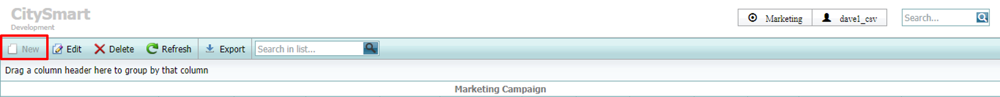Note
If you created the campaign already, click Edit on the function bar to update the information.
If you want to delete the campaign, click Delete 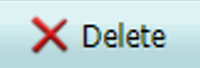 on the function bar. You CANNOT delete the campaign that has leads.
Step 3: Input values into the fields
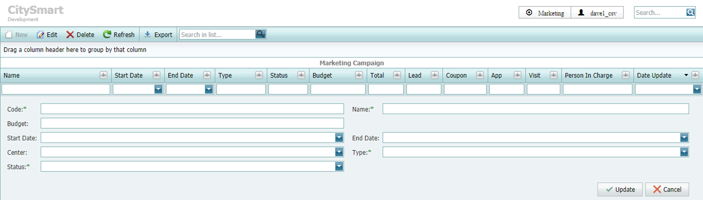Note
- Code*, Name*: required fields, you should unify the code & name and make sure everyone understand it the same way.
- Budget: fill in your planned budget for this campaign (VND)
- Start Date*: required field, select the day your campaign start
- End Date*: required field, select the day your campaign end
- Center: select the centers you want to run this campaign
- Type*: required field, select School if you want to run this campaign by School OR select Telemarketing if you want to run this campaign by Telemarketing.
- Status*: required field, select status for your campaign as Planning, Ready, InProgress, or Finnish (you cannot import leads to Campaigns with Status as “Finish”)
Tip
Name your Marketing Campaign:
- Campaign for Telemarketing: type in name & code as HCM_TMK_201905_[SourceName], example: HCM_TMK_201905_Webtretho; select Type “Telemarketing”.
- Campaign for Center: type in name & code as HCM_MKT_201905_[SourceName], example: HCM_MKT_201905_DigitalA; select Type “School”.
- Campaign for Local: type in name & code as HCM_Local_201905_[SourceName], example: HCM_Local_201905_M03-Activation; select Type “School”
If you don’t want Sale Person in your organization to import leads to particular Campaigns, change their status to Finish.
Step 4: Click Update
2. Import leads into a Campaign¶
Step 1: Access Marketing > Import Lead on Menubar
Step 2: Download Template SP_AddLeadList to import lead
Note
Template SP_AddLeadList looks like

Please note the instructions in the template for each field below (Step 3)
Step 3: Input values into the template fields as instructed
Warning
DO NOT delete rows 1 - 5, OR ANY Collumns, OR change the format in the template.
Note
- Student: input student name if know, if do not know input noname-yyyy-mmdd-01 for example: noname-2019-0510-01
- Phone: input phone number (must be 10 digits, no space, no special characters) for example: 0123456789
- Contact Name: input parent’s name (if do not know parent’s name: input “noname”
- SOF: input Source of Information of Leads (example: Banner ad, billboard, Email, etc.)
- Division: input Division Code (Center Code) named as “MaCN” in the template (example: D3.ASP = 110, D3.MB = 111, etc.)
- AO: input Account Owner created in the system (must be Managers / Supervisors level)
- Gender: 1 = Male, 0 = Female (if not defined, must input all as 1 or 0)
Step 4: Select Marketing Campaign that you created before in Marketing/Import Lead
See also
Step 5: Upload SP_AddLeadList Template

Note
you can select the Template file by clicking Browse  or drag and drop the Template file from your computer onto the Upload File Area
or drag and drop the Template file from your computer onto the Upload File Area
Step 6: Click Submit to complete uploading process
Warning
While uploading, DO NOT CLOSE CSF APPLICATION under any circumstances. Although upload process still run, Lead Import Results will not be sent to User.
Step 7: Check Lead Import Results
After the uploading process is complete, the result will be sent to the user as LeadImport Template which looks like
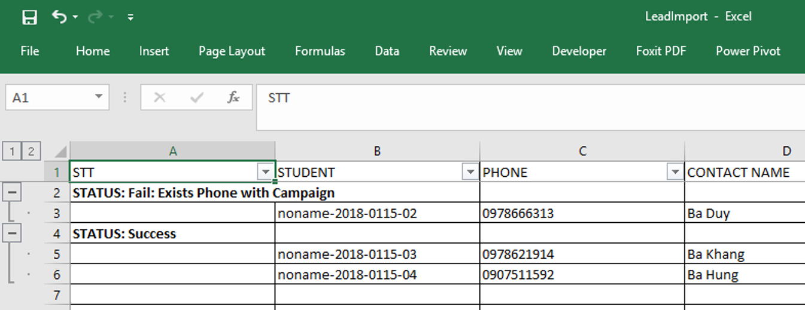Note
the result will show you which leads are imported successfully, which leads are failed to import and why, please expand the rows in the LeadImport Template to see the details.
Step 8: Check Imported Leads in Marketing > Warehouse

Note
Select Source = “DATA”, Created = “Days-you-want-to-view”
3. Assign leads to TMK / ADMISSION¶
Step 1: Access Marketing > Warehouse on Menubar
Step 2: Filter Source = “DATA”, Created = “Days-you-want-to-view”, then click Search
Step 3: Tick in the box to select Leads or the whole Campaign to assign, then click Active 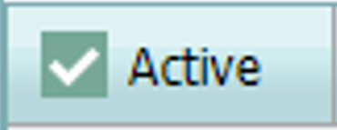
Note
Division & AO information were input in the template SP_AddLeadList already, so you just need to select leads you want to assign and click .
To select leads you can:
- select ONE Lead by ticking the box of the lead on the grid view
- select ALL Leads in the campaign by ticking the box of the campaign
- select SOME Leads in the campaign by ticking SOME boxes OR use the Mouse & Key board Combination (Left Mouse Click First Lead, then Shift + Left Mouse Click Last Lead)
4. Check Marketing Campaign Operation Progress¶
Step 1: Access Marketing > Campaign List on the Menubar
Step 2: Filter the Campaign or any Category that you want to view on the grid
Note
On grid you will see:

- Name: Name of Marketing Campaign that you created
- Start Date: Start Date of the corresponding Marketing Campaign
- End Date: End Date of the corresponding Marketing Campaign
- Type: Telemarketing or School that you selected when create Marketing Campaign
- Status: Current Status that you select when create Marketing Campaign
- Budget: Planned budget that you prepare when create Marketing Campaign
- Total: Total Leads that you import into the Campaign
- Lead: Total Leads that you have not assign to TMK / Admission
- Coupon: Total Leads that currently stay in the stage COUPON
- App: Total Leads that currently stay in the stage APPOINTMENT
- Visit: Total Leads that currently stay in the stage VISIT
- Person in charge: the person who created the Marketing Campaign
- Date Update: the date when user creates the Marketing Campaign
5. Check Marketing Campaign Operation Details¶
Step 1: Access Marketing > Warehouse on the Menubar
Step 2: Filter Source = “ALL”, Created = “Days-you-want-to-view”, click Search
Step 3: Drag and Drop the Collumn Header to the are that you want to group

Note
depend on your personal wish to view which data, there are plenty of ways for you to group and filter data

See also
Telemarketing¶
1. Assign New COUPONS received from Marketing¶
Step 1: Access Telemarketing > Coupon Assigning on the Menubar
Step 2: Filter Source = “CREATED”, Created = “Days-you-want-to-view”, click Search
Step 3: Filter Campaigns you want to Assign (in case there are two many campaigns appear on the grid)
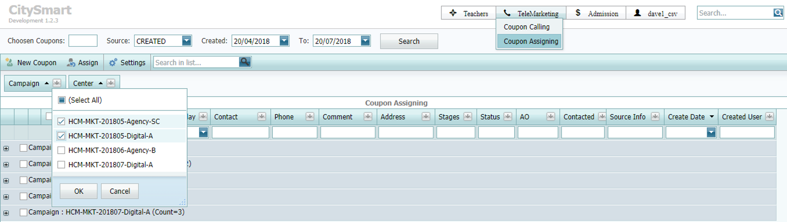Step 4: Select Leads you want to assign from the filtered Campaign from Step 3
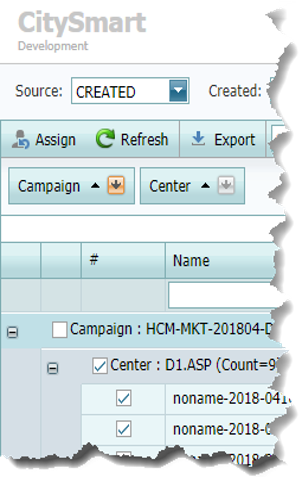Warning
You MUST check total number of coupons you selected before you assign to make sure you are assigning correctly.

Step 6: Type in usernames that you want to assign to in the pop-up window
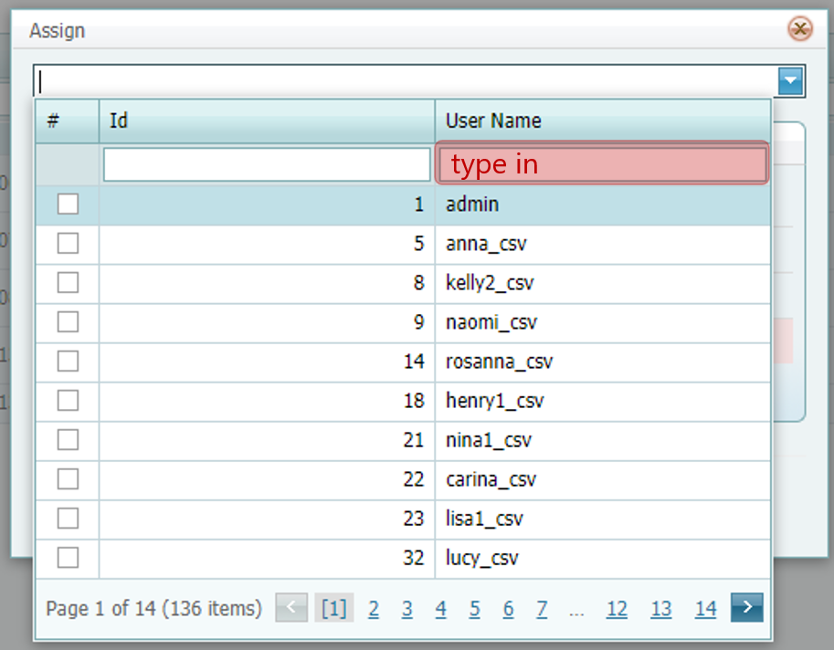Step 7: Check the list of usernames you want to assign, the number of leads for each username, then click OK
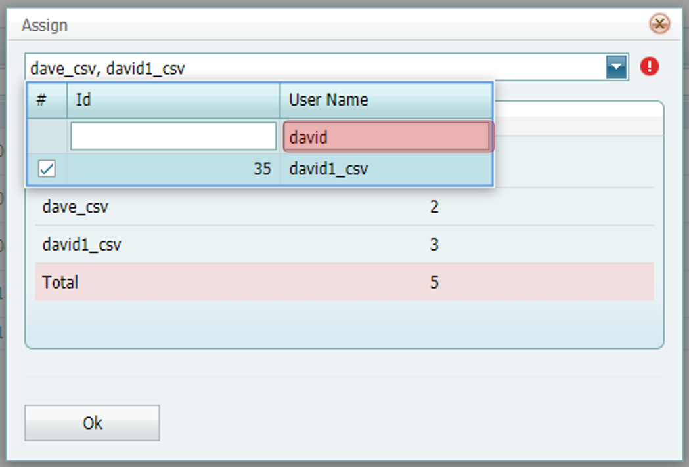Note
The number of leads will be equally divided among selected usernames.
For example: if there are 301 leads, and you want to assign to 3 usernames that you select in order “A”, “B’, “C”,. respectively:
- “A” will automatically get 100 leads
- “B” will automatically get 100 leads
- “C” will automatically get 101 leads
When you complete assigning New Coupons to users, Lead Status will be updated from “Created” to “Started”, at this point on, your staff can view these leads on their list and start calling.
2. Reassign Leads¶
Step 1: Access Telemarketing > Coupon Assigning on the Menubar
Step 2: Filter Source = “ASSIGNED”, Created =”Days-you-want-to-view”, click Search
Step 3: Reassign Leads by repeating the same steps as Step 3 - 7 in `ASSIGN NEW COUPONS`_
Note
When you REASSIGN Leads, Lead Status is updated as follow:
- COUPON: Status is updated to “Started”
- APPOINTMENT: Status is still the same (example: if Lead A Status is “Callback”, when you reassign, its Status is still “Callback”.
- VISIT, CONTRACT: Cannot reassign
3. Check Lead Status in Telemarketing¶
Step 1: Access Telemarketing > Coupon Assigning on the Menubar
Step 2: Filter Source = “ALL”, Created =”Days-you-want-to-view”, click Search
Step 3: Group Category and Filter STAGES and Status you want to view

4. Create a New Lead¶
Step 1: Access Telemarketing > Coupon Assigning on the Menubar
Step 2: Click New Coupon 
Step 3: Input values into fields in the pop-up window (* : required field)
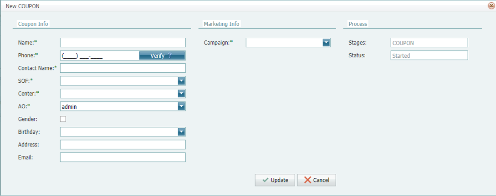Note
The button Verify is to check if Lead exist in system or not. You can only create new coupon if lead does not exist in the system.
- Exist: Phone field will appear in Yellow

- Not Exist: Phone field will appear in Green

Depend on the SOF of New Lead, you need to select correct SOF and Campaign (Calling, facebook, etc.)
Step 4: Click Update
5. Call, Record Call History and Set Next Action for Leads¶
Use Case 1: Call Recently Assigned Leads¶
Step 1: Access Telemarketing > Coupon Calling on the Menubar
Step 2: Filter Source = “STARTED”, Created Date |createddate|, From - To = “Days-Leads-are-created”, click Search
Tip
Coupon Calling is designed to best support telemarketing users to perform their daily calling tasks:
- Filter Source=”STARTED”, select *Created Date, From-To: in order to call recently assigned leads
- Filter Source=”ALL”, select “Next Scheduler”, From-To: in order to call leads that you planned to call on specific dates
Step 3: Select Leads to call (One Lead, Some Leads, or ALL Leads), click Call
You will see this screen:
- Total: Total Leads you selected to Call
- Current: The order number of Current Lead you are Calling

- Time: The duration of your Call for Current Lead

- Lead Detail:
Note
You can edit and save changes for lead detail including:
- Name: Student Name
- Birthday: Student Birthday
- Sex: Male / Female
- Contact: Contact’s Name (Father’s name, Mother’s Name, Grandfher’s Name, etc.)
- Phone: Main Contact Phone Number
- Phone 2: Second Contact Phone Number
- Address: Contact Address
- Email: Contact Email
- Notes: Student Related Notes, not Call Notes (example: student is young, shy, needs more attention, etc.)
- Stage Stage of Lead (LEAD / COUPON / APPOINTMENT / VISIT / CONTRACT)
You cannot edit Phone & Stage of Lead Detail.
- Call Log:
- Call History:
Note
When you click , 3CX Software will automatically start to call the selected Leads. (please contact IT in your organization if 3CX software does not work)
3CX looks like this:

Step 4: Record Call History and Set Next Action for Leads
Callback:
- Reason: select suitable reason for Callback (Not Answer, Busy, Consider, Interested, Not Interested)
- Potential Level: evaluate customer potential level (Hot, Warm, Cold)
- Program: select School Program that Parents want to enroll their students in
- Note: type in current Call notes
- Schedule: select Next Care Plan to Callback
Meeting:

- Meeting on: select the date you book meeting with parents
- Meeting to: select the location you book meeting with parents
- Potential Level: evaluate customer potential level (Hot, Warm, Cold)
- Program: select School Program that Parents want to enroll their students in
- Note: type in current Call notes
- Schedule: Next Care Plan will be automatically set as Meeting on
Useless:
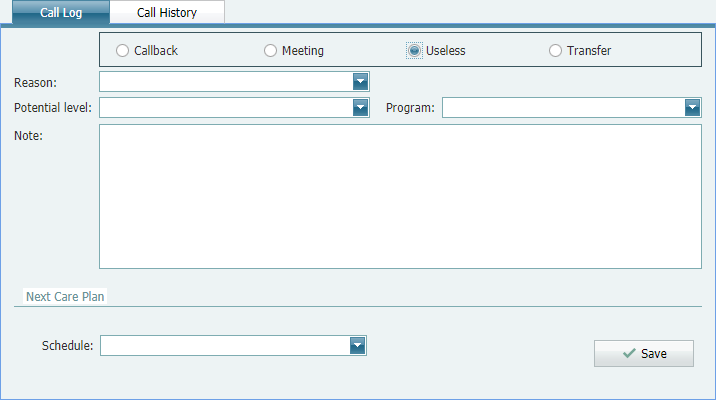- Reason: select suitable reason for Useless (Wrong Age, Wrong Location, Wrong Number)
Transfer:

- Reason: select reason “Transfer Center”
- Center: select Center you want to transfer to
- Potential Level: evaluate customer potential level (Hot, Warm, Cold)
- Program: select School Program that Parents want to enroll their students in
- Note: type in current Call notes
- Schedule: select Next Care Plan to Callback
Step 5: Click Save 
Note
If you are calling a list of Leads, you should wait for customer to end the call first, then click . Because the call will end and automatically start next call in the list when you click .
6. Send SMS Message to Leads from Telemarketing¶
Step 1: Access Telemarketing > Coupon Calling on the Menubar
Step 2: Filter Source = “ALL”, Created Date, From - To = “Days-Leads-are-created”, click Search
Step 3: Select ONE Lead you want to text SMS to, Right-mouse-click, click SMS 
Step 4: Select SMS Brandname, Send to (Phone Number), SMS Template, Type in Message, Select Potential Level
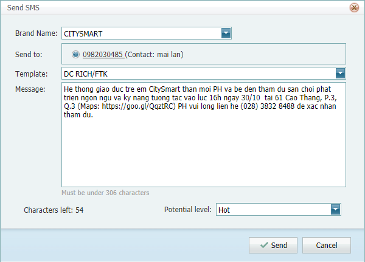Note
There will be a message box to inform if SMS Message Fails to send OR send Successfully.
Step 6: Check SMS Sending Status History Successfully or Failed
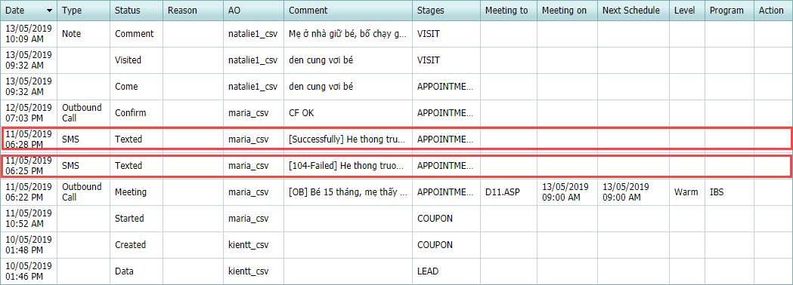7. Check Summary Sale Performance¶
Step 1: Access Telemarketing > Sale Performance on the Menubar
Step 2: Filter Data View by “Day” / “Week” / “Month” / “From-To”, Click Search
What you see:
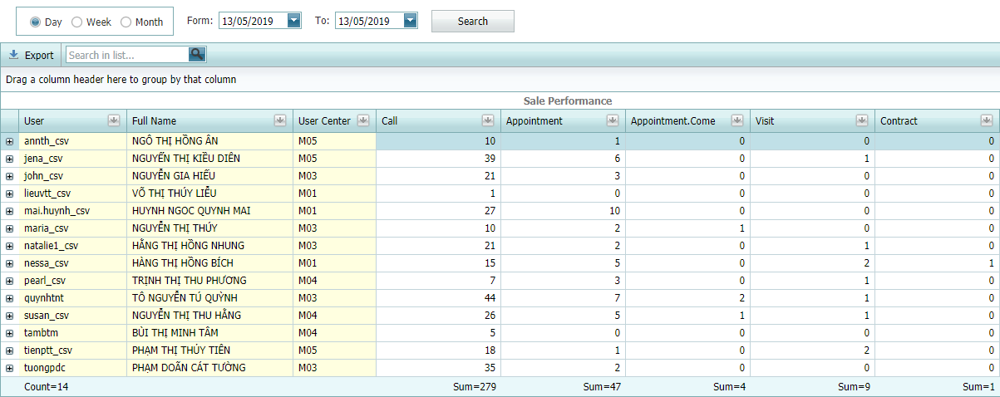Note
Understand the Summary Sale Performance as follow:
- User: Username of sale representative in system
- Full Name: Full Name of User
- User Center: Centers of User
- Call: Total Calls that User Called and Saved (including calling & booking appointment)
- Appointment: Total Appointments that User Booked and Saved
- Appointment.Come: Total Come from Appointments that user Confirmed and Saved
- Visit: Total Walk-in that user Confirmed and Saved (not from Appointments)
- Contract: Total Contracts User Converted
If you want to see detail of one user, click expand  to see history details:
to see history details:
- Track Lead Activities
Step 1: Access Telemarketing > Lead Activity Tracker on the Menubar
Step 2: Filter Data View by Day / Week” / Month / From-To, Click Search
For example: the context: today is 13/05/2019, your username is “annth_csv”, you want to see every activities that you did today, you filter data view by “Day” = Today(), click Search,
What you see:
Admission¶
1. Check Appointments information at School¶
Step 1: Access Admission > Appointments on the Menubar
Step 2: Filter Appointment = “Days-you-want-to-view”, click Search
What you see:
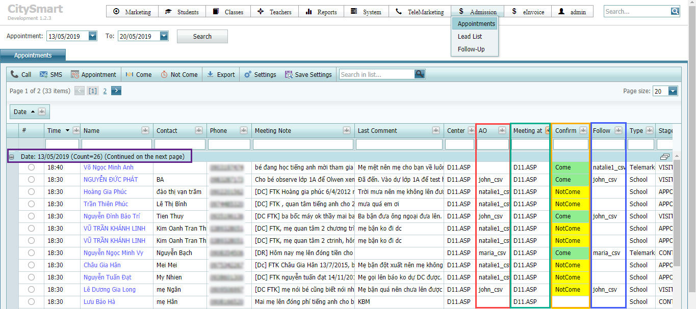for example:
On 13/05/2019, there are total 26 appointments at Center in District 11 [Meeting at Collumn], booked by Whom [AO], Confirmed Come by Whom [Follow]besides, you will see other information such as: Meeting Time, Student Name, Contact Name, Phone, Meeting Notes, Action Comments, etc.
2. Call Confirm Appointment¶
Step 1: Access Admission > Appointments on the Menubar
Step 2: Filter Appointment = “Days-you-want-to-view”, click Search
Step 3: Select ONE Lead you want to call confirm, click Call
Step 4: Input Call Note in the pop-up call window, then click Save |save|

3. Confirm Come / Not Come for Appointment at School¶
Step 1: Access Admission > Appointments on the Menubar
Step 2: Filter Appointment = “Days-you-want-to-view”, click Search
Step 3: Select ONE Lead you want to confirm Come / Not Come, click Come or Not Come 
Step 4: Input Confirm Note, select Potential Level, then click Save |save|
When you confirm Come , you will see:

When you confirm Not Come , you will see:
Note
The person who click confirm Come will be the one who follow the lead at school [VISIT > CONTRACT]. If you want someone else to follow the lead, please use function Refollow in Lead List.
When click confirm Not Come , only Appointment Status is updated to NotCome
Warning
Users with this role MUST confirm Come or Not Come within the day of the appointment.
4. Send SMS Message to Lead in Appointments¶
Step 1: Access Admission > Appointments on the Menubar
Step 2: Filter Appointment = “Days-you-want-to-view”, click Search
Step 3: Select ONE Lead you want to send SMS to, then click SMS on the Menubar

Step 4: Select Brandname, Phone, Template, input Message, select Potential level
Note
There will be a message box to inform if SMS Message Fails to send OR send Successfully.
Step 6 (Optional): Check SMS Sending Status History Successfully or Failed
5. Create a New Appointment after confirm Not Come¶
After you confirm Not Come and input confirm notes, you want to book another appointment, please do:
Step 1: Select the Lead you just confirmed Not Come .
Step 2: Click New Appointment on the Menubar
Step 3: Select Schedule [Time], Meeting to [Location], input Note, select Potential Level for next appointment on the pop-up window, then click Save |save|
6. Check current VISIT and CONTRACT at School¶
Step 1: Access Admission > Lead List on the Menubar
Step 2: Filter Created Date - To = “Leads-Created-From-Date-To-Date”, then click Search
Step 3: Group collumn you want to see
for example: I want to see how many customer still stay at STAGE VISIT and their potential levels
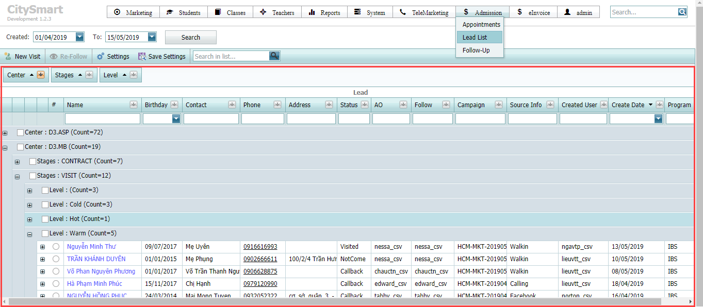7. Create a New Visit at school¶
Step 1: Access Admission > Lead List on the Menubar
Step 2: Click New Visit 
Step 3: Input values into fields in the pop-up window (* : required field)

Note
The button Verify is to check if Lead exist in system or not. You can only create new coupon if lead does not exist in the system.
- Exist: Phone field will appear in Yellow
- Not Exist: Phone field will appear in Green
Depend on the SOF of New Lead, you need to select correct SOF and Campaign (Facebook, Website, etc.)
Step 4: Click Update
8. Refollow a Lead¶
Step 1: Access Admission > Lead List on the Menubar
Step 2: Filter Created =”Days-Leads-Created”, click Search
Step 3: Select a Lead to refollw, then click Refollow 

Step 4: Select Follow User
Step 5: Click Update
8. Follow Up personal Leads¶
Use Case 1: Follow Next Scheduler¶
Step 1: Access Admission > Follow-Up on the Menubar
Step 2: Select Next Scheduler, filter From-To = “Days-next-scheduler”, then click Search
Tip
if you want to check which leads you need to call today, select Next Scheduler, filter From-To = Today, click . Check the information on the grid to decide which leads to call.
Step 3: Select Call to `Call, Record Call History and Set Next Action for Leads`_
Step 4: Click Save
Note
You should wait for customer to end the call first, then click . Because the call will end and automatically start next call in the list when you click .
Use Case 2: Follow a Lead on special purpose¶
Step 1: Access Admission > Follow-Up on the Menubar
Step 2: Select Created Date, filter From-To = “Days-Leads-Created”, then click Search
Step 3: Select Call to `Call, Record Call History and Set Next Action for Leads`_
Step 4: Click Save
Note
If you are calling a list of leads, you should wait for customer to end the call first, then click . Because the call will end and automatically start next call in the list when you click .
Classes¶
1. Check Class Schedules at School¶
Step 1: Access Classes > Class Scheduler on the Menubar
Step 2: Select Center and Program you want to check Class Schedules, click Search

Note
Class Scheduler Date Range is set 3 months as default (Previous Month + Current Month + Next Month). If you want to change Date range, expand Advance Filter and select Date Range as you want.

Step 3: Check Class Schedules


{kind=link}
{kind=link}
{kind=link}
{kind=link}
{kind=link}
{kind=link}
{kind=link}
{kind=link}
{kind=link}
{kind=link}
{kind=link}
{kind=link}
{kind=link}
{kind=link}
{kind=link}
{kind=link}
{kind=link}
{kind=link}
{kind=link}
{kind=link}
{kind=link}
{kind=link}
{kind=link}
{kind=link}
{kind=link}
{kind=link}
{kind=link}
{kind=link}
{kind=link}
{kind=link}
{kind=link}
{kind=link}
{kind=link}
{kind=link}
{kind=link}
{kind=link}
{kind=link}
{kind=link}
{kind=link}
{kind=link}
{kind=link}
{kind=link}
{kind=link}
{kind=link}
{kind=link}
{kind=link}
{kind=link}
{kind=link}
2. Search Class¶
Step 1: Access Classes > Class List on the Menubar
Step 2: Filter Start Date - To = “Date-Class-Start-From-To”, then click Search

Step 3: Type in Class Name you want to search, for example: type in “2B-1807”
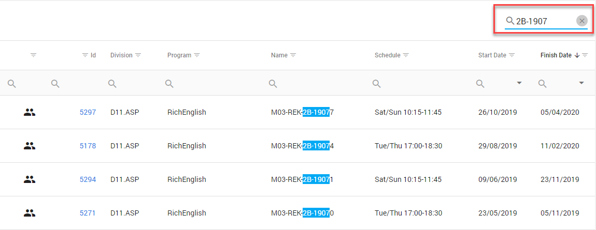{kind=link}
Tip
You can search any value you want to in the serch box.
3. Check Class Detail¶
Step 1: `Search Class`_
Step 2: Click Class ID in Class List Results
Step 3: Check Class Detail
4. Assign Teacher in Class¶
Step 1: `Search Class`_
Step 2: Click Assign Teacher 
You will see Assign Teacher window:
{kind=link}
Step 3: Click Add if you want to add Main Teacher and Main Assistant Teacher in class
{kind=link}
Step 4: In Add Teacher pop-up window, search Teacher Name in search box, check Teacher Info, then click Add 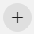
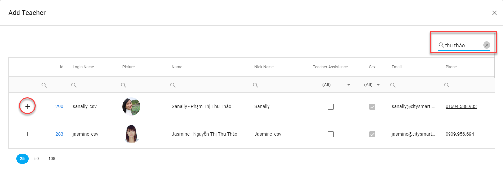{kind=link}
{kind=link}
Note
System will check Teacher Availabilty when you click Add or Cover  . If you don’t see the teacher you are looking for, it means the teacher is busy with the class schedule you are working on.
. If you don’t see the teacher you are looking for, it means the teacher is busy with the class schedule you are working on.
Step 5: In Enrollment Information, input fields including:
- Is Assisstant Teacher:

Note
Tick this box if teacher is Assistant Teacher. If teacher is Main Teacher, don’t tick.
- Extra Rate:

Note
Type in values (hours: 0.5, 1, 1.5, 2, etc.) depend on each Teacher Extra Hour Rate in Class.
- Choose Lessons:
{kind=link}
Tip
You can filter lessons to select quickly. For example: Class Schedule is on Saturday & Sunday (48 lessons), the teacher only teaches 24 lessons on every Saturday, you can quickly select as below:

Then check Total Lessons chosen for teacher, you will see there are 24 lesons (on Saturdays)

Step 6: Click OK
Step 7: Check Teacher In Class result

Note
Teacher in Class | Color Code Definition

- Notin: Teacher is NOT IN class on that day
- In: Teacher is IN class on that day
- Cover: Teacher covers in class on that day
- BeCovered: Teacher is covered in class on that day
Note
If you want to assign Teacher to COVER in Class, please follow these steps:
Step 1: `Search Class`_
Step 2: Click Assign Teacher
You will see Assign Teacher window:
Step 3: Click COVER
Step 4: Search Cover Teacher in the search box
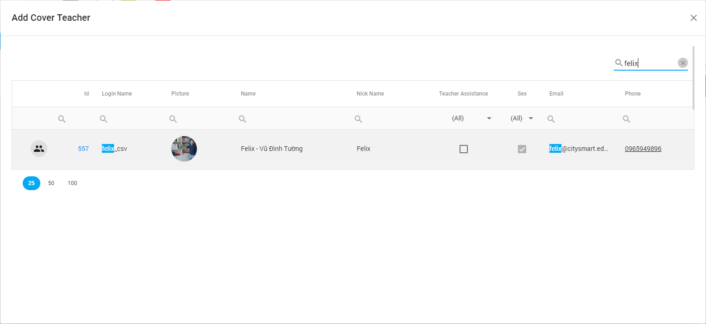{kind=link}
Step 5: Click Assign Teacher
Step 6: In Add Cover Teacher pop-up window, select Teacher to be Covered
{kind=link}
Step 7: Input values in the fields in Add Cover Teacher as you want to apply for the Cover Teacher
{kind=link}
Step 8: Click OK
Step 9: Check Add Cover Teacher Results
{kind=link}
5. Edit Teacher in Class¶
Step 1: `Search Class`_
Step 2: Click Assign Teacher
Step 3: In the Assign Teacher window, click Edit 
Step 4: Find and select information you want to edit, click Edit
Step 5: Input changes and click Save Icon (you can edit Teacher Extra Rate, and Is Assistant only)

6. Delete Teacher in Class¶
Step 1: `Search Class`_
Step 2: Click Assign Teacher
Step 3: In the Assign Teacher window, find and select teacher you want to delete, click Delete 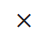
{kind=link}
Warning
If the Teacher is Covered by another teacher, you must delete Cover Teacher first, then delete the Teacher.
7. Delete Lessons of Teacher in Class¶
Step 1: `Search Class`_
Step 2: Click Assign Teacher
Step 3: In the Assign Teacher window, find and select teacher you want to delete lessons, click Edit
Step 4: In the Edit Teacher pop-up window, click Delete Icon on the lessons you want to delete.

{kind=link}
Teachers¶
1. Search Teacher in Teacher List¶
Step 1: Access Teachers > Teacher List on the Menubar
Step 2: In the Teacher List window, type Teacher Name or Teacher Code in the search box to search

Step 3: Click Details to see Teacher Details
Note
Teacher list is grouped by Main Center (The center where the teacher belong to in terms of management).
2. Edit Teacher Details¶
Step 1: `Search Teacher`_
Step 2: Click Details to see Teacher Details
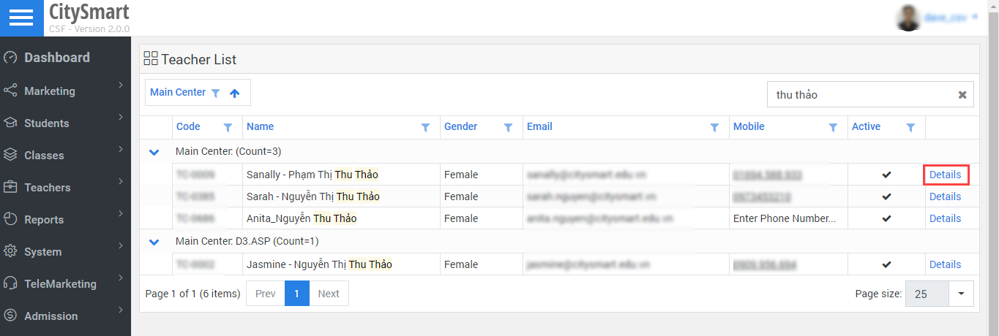{kind=link}
Step 3: Input values into fields you want to update, then click Save 
{kind=link}
Note
Difference between Main Center and Teacher Location:
A Teacher belongs to ONE Main Center, but can teach at MANY Teaching Location.
3. Check Teacher Total Hours¶
Step 1: Access Teachers > Teaching Hours on the Menubar
Step 2: Select Center = “Main Center”, Program, Salary Month, then Click Search
Note
Salary Month Range is defined by the Organization.
Step 3: Check Teacher Teaching Hours Results

Note
Teacher is grouped by Role. If One Teacher plays TWO Roles (Teacher labeled as TC and Assistant Teacher labeled as TA), there will be TWO Rows summarizing teacher’s teaching hours.
Collumn Name Definition:
- Role: Teacher Roles in Class (TC or TA)
- Teacher: Teacher Name in system
- Actual Hour: Total class hours of the teacher
- Extra Hour: Extra Rate of the Teacher added to Actual Hour
- Total Hour: Hours of teacher which will be taken to calculate Teacher Salary (Actual Hour + Extra Hour)
- PT: Placement Test Hours of the Teacher
- DC: Demo Class Hours of the Teacher
- CH: Cambridge House Hours of the Teacher
- EC: English Club Hours of the Teacher
- Support: Support Hours of Teacher (events, other classes, etc.)
- Parketing: parking tickets to be settled by payment back to the Teacher
- Send?: Check if Teacher Hours Summary is sent to Teacher or not
4. Check Status of Total Hours¶
Step 1: `Check Teacher Total Hours`_
Step 2: Check Status of Total Hours Summary
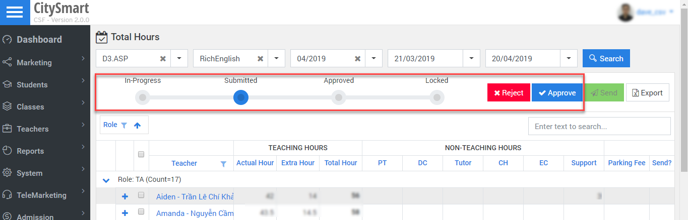{kind=link}
Note
Flow of Total Hour Summary:

Warning
When the Total Hour Summary is Approved and Locked, you cannot change the Total Hours Summary.
If you want to change the Total Hour Summary, you need to Reject 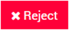 until the Status is InProgress.
{kind=link}
After you complete editting Teacher Hours in `Assign Teacher`_ window, you can check the results and
Submit  > Approve
> Approve  > Lock 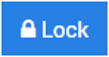 Total Hours Summary.
> Lock 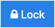 Total Hours Summary.
{kind=link}
5. Export Total Hours Summary¶
Step 1: `Check Teacher Total Hours`_
Step 2: Click Export 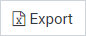
{kind=link}
Step 3: Save Total Hour Summary excel worksheet
{kind=link}
Step 4: Open saved Total Hours in your computer and check Total Hour Summary, Total Hour Detail, Non-Teaching Hours Detail

6. Send Teacher Total Hours to Teacher via e-mail¶
Step 1: `Check Teacher Total Hours`_
Step 2: Select Teachers you want to send email to

{kind=link}
Step 4: Check Send? column to see if email is sent or not (Tick: is sent, Blank: is NOT sent)
7. Update Non-Teaching Hours of Teacher¶
Step 1: Access Teachers > Non-Teaching Hours on the Menubar
Step 2: Click Add New to add Non-Teaching Hours by Types
{kind=link}
Step 3: Create Non-Teaching Hours Activity, in Add New pop-up window, select Center = “Teaching Location”, Program, Type, Room, Date, Start Time, End Time, Type Note
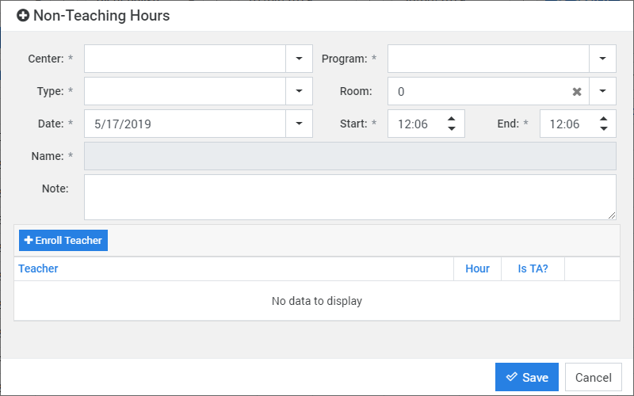{kind=link}
Step 4: Enroll Teacher in the Non-Teaching Hours Activity

Step 5: Click Update to complete enrolling Teachers in the Activity
Step 6: Check the input information, then Click Save
Step 7: See Result on the grid by selecting Center = “Main Center”, Program, From-To, then Click Search

8. Edit/Delete Non-Teaching Hours of Teacher¶
Step 1: Access Teachers > Non-Teaching Hours on the Menubar
Step 2: Select Center = “Main Center”, Program, From - To = “Salary-Month-Range”
Step 3: Check Non-Teaching Hours by Type
See also
{kind=link}
{kind=link}
Students¶
Live Report¶
- View Live Report
Step 1: Access http://csf-beta.citysmart.vn/ in web browser
Step 2: Log in using your username and password
Step 3: Click Live Report on the Homepage
Step 4: Find a Report you want to view
- Live Report View Permissions
CSF Doc Revision¶
| Version | Updateted on | Changes | Content | Tool |
|---|---|---|---|---|
| 1.0.1804 | 04/01/2018 | Create, Update | Introduction, Marketing, Telemarketing, Admission | Powerpoint |
| 1.0.1805 | 05/10/2018 | Update | Telemarketing (Coupon Calling, Coupon Assigning) | Powerpoint |
| 1.1.1805 | 15/05/2018 | Update | Admission (Appointments) | Powerpoint |
| 1.2.1806 | 25/06/2018 | Update | Admission (Lead List) | Powerpoint |
| 1.2.1807 | 17/07/2018 | Update | Marketing, Telemarketing, Admission | Powerpoint |
| 1.2.1809 | 09/12/2018 | Update | Marketing, Telemarketing, Admission | Powerpoint |
| 1.3.1810 | 10/01/2018 | Update | Classes (Class List, Class Scheduler) | Powerpoint |
| 1.3.1810 | 24/10/2018 | Update | Teachers (Teacher List, Total Hours, Non-Teaching Hours, Teacher Detail) | Powerpoint |
| 2.0.1905 | 05/08/2019 | Transition | Powerpoint User Guide > Sphinx Documentation Sphinx | Sphinx |